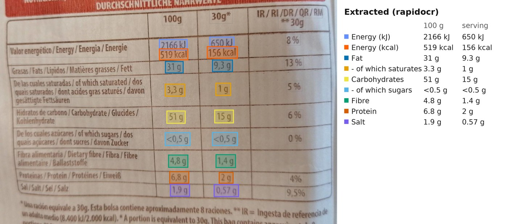

Transforma a foto de uma embalagem em dados nutricionais estruturados. Escolha qualquer um dos 15 motores de OCR, do Tesseract clássico aos modelos visão-linguagem de 2025–2026, e um extrator que entende o layout encontra cada nutriente com os valores por 100 g e por porção, em mais de 15 idiomas e até em fotos de lado. Regras de coerência nutricional corrigem erros típicos de OCR, e todos os motores são medidos no mesmo benchmark de fotos reais do Open Food Facts.
A interface web local: abrir fotos, ler com o RapidOCR, navegar pela visão lado a lado, trocar para o docTR para comparar e exportar CSV. Gravado na CPU de um notebook, leitura acelerada. Fotos: colaboradores do Open Food Facts (CC BY-SA 3.0).
motores de OCR num único parâmetro
15
idiomas, formatos europeu e americano
15+
de F1 em fotos reais com RapidOCR em CPU
0,73
treino necessário
0
Python
RapidOCR (ONNX)
PaddleOCR
docTR
EasyOCR
Tesseract
Surya
olmOCR / GLM-OCR
Ultralytics OCR (YOLO26-text)
Docker
Como funciona
01De uma foto torta a números limpos
O motor de OCR só transforma pixels em palavras com posições. Todo o resto é um extrator que entende o layout e lê a tabela como uma pessoa: encontra os nomes dos nutrientes, encontra os números com unidades, associa cada número à sua linha e coluna e confere se o resultado faz sentido nutricional.
Fig. 01 · Pipeline de extração, da foto aos dados estruturados
Qualquer motor, o mesmo extrator
Motores que devolvem texto em vez de caixas (OCR visão-linguagem) são dispostos numa grade, então o mesmo extrator e o mesmo benchmark valem para os 15.
Layouts reais de rótulo
Colunas por 100 g e por porção, kJ e kcal na mesma célula, colunas de %VD ignoradas, tabelas americanas, fotos de lado e tabelas horizontais.
Autoverificação
Gordura saturada ≤ gordura, açúcares ≤ carboidratos, ≤ 100 g por 100 g, kJ ≈ 4,184 × kcal: valores implausíveis são sinalizados e um separador decimal perdido é reparado.
Resultados
02Medido em fotos reais de produtos
F1 por campo nas 199 fotos de teste do dataset de nutrientes do Open Food Facts: fotos de celular, embalagens curvas, reflexos e muitos idiomas. A referência usa o OCR em nuvem do próprio dataset com o mesmo extrator.
Fig. 03 · F1 por campo para cada motor de OCR em fotos reais (maior é melhor)
Tabela em alemão / inglês / francês, valores associados nos três idiomas

Rótulo espanhol com colunas por 100 g e por porçãoFoto pequena e de baixa resolução, ainda assim lida
Motor
F1
Precisão
Revocação
Rótulos perfeitos
OCR de referência (tokens do dataset)
0,834
0,887
0,787
41,9 %
Ultralytics OCR (ultralytics:s, CPU)
0,742
0,774
0,712
20,1 %
RapidOCR (ONNX, CPU)
0,730
0,856
0,636
17,6 %
docTR
0,699
0,808
0,617
18,1 %
EasyOCR
0,544
0,677
0,454
6,0 %
O extrator foi ajustado só com o conjunto de treino; o de teste ficou separado. O Ultralytics OCR (detector de texto YOLO26 + reconhecedor PP-OCRv6) tem o maior F1 entre os motores, graças à revocação (0,712 contra 0,636); o RapidOCR em ONNX Runtime é mais preciso (0,856 contra 0,774) e muito mais rápido em CPU (cerca de 5,7 s por imagem contra cerca de 119 s). O Ultralytics OCR usa a licença AGPL-3.0 e é um extra opcional. Fotos mais difíceis: reexecutar as 10 fotos de menor F1 do Ultralytics OCR com o detector maior x subiu o F1 médio delas de 0,041 para 0,104 (4 melhoraram, 6 ficaram iguais, 4 continuam em 0, 3 delas porque o extrator atribui valores à coluna errada de por 100 g / por porção). É uma amostra dos piores casos, então não é comparável ao conjunto completo.
Galeria de fotos reais
Seis fotos do conjunto de teste lidas pelo RapidOCR: cada valor lido aparece destacado na cor do seu nutriente, ao lado da tabela extraída.
Gerada pelo make report a partir do benchmark. Fotos: colaboradores do Open Food Facts (CC BY-SA 3.0).
Não existe um OCR melhor para tudo: precisão, velocidade, tamanho da instalação, hardware e licença se equilibram. O benchmark mede esse equilíbrio; engine="auto" escolhe o primeiro motor instalado de uma lista fixa de preferência, que privilegia motores leves e rápidos.
Regras legíveis
Não precisa de dados de treino, e cada valor pode ser rastreado até as palavras e caixas de onde veio.
Benchmark primeiro
Toda mudança no extrator é medida em fotos reais, com precisão, revocação, taxa de rótulos perfeitos e F1 por nutriente.
Núcleo leve
O núcleo só precisa de NumPy e Pillow; cada motor é um extra opcional, então a instalação só com CPU fica pequena.
Local por padrão
CLI, interface web, API Python ou Docker, e as imagens nunca saem da máquina. O servidor web usa só a biblioteca padrão.
Só modelos abertos
O OCR visão-linguagem roda pelo Hugging Face ou por um servidor local Ollama / vLLM; nenhuma API paga é chamada.